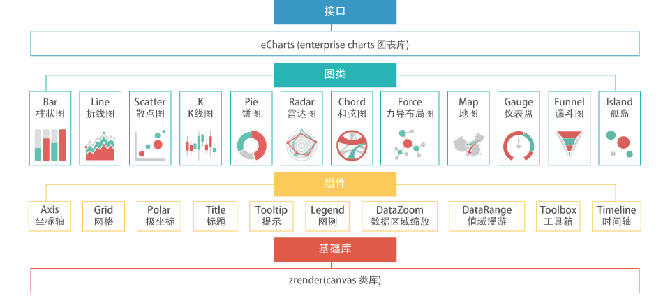

EChartsは、百度の商業フロントエンドデータ可視化チームによるオープンソースであり、html5 Canvasに基づく純粋なJavascriptチャートライブラリです。直感的で生き生きとした、インタラクティブでパーソナライズ可能なデータ可視化チャートを提供します。革新的なドラッグ再計算、データビュー、値域ローミングなどの機能はユーザー体験を大幅に向上させ、ユーザーにデータをマイニングし統合する能力を与えます。——ビッグデータ時代、データチャートを再定義する時が来ました。
Architecture
ECharts (Enterprise Charts 商用製品チャートライブラリ)商用製品でよく使われるチャートライブラリを提供し、基盤としてZRender、座標系、凡例、ツールチップ、ツールボックスなどの基本コンポーネントを作成し、その上に折れ線グラフ（エリアグラフ）、棒グラフ（帯グラフ）、散布図（バブルチャート）、円グラフ（ドーナツグラフ）、K線図、地図、コードチャート、力指向レイアウトチャートを構築し、任意の次元の積み上げと複数チャートの混在表示をサポートします。

混在チャートはより表現力豊かで面白くなります。EChartsが提供するチャート（全9カテゴリ14種）は任意の混在をサポートします：
折れ線グラフ（エリアグラフ）、棒グラフ（帯グラフ）、散布図（バブルチャート）、K線図、 円グラフ（ドーナツグラフ）、レーダーチャート、地図、コードチャート、力指向レイアウトチャート。
混在表示の場合の標準チャート：
単一の凡例、ツールボックス、データ領域ズーム、値域ローミングモジュール、1つの直角座標系（1つまたは複数のカテゴリ軸線、1つまたは複数の値軸線を最大上下左右4本まで含むことができます）を含みます。

ドラッグ再計算
ドラッグ再計算機能（特許）は、データ統計チャートにこれまでにないユーザー体験をもたらし、ユーザーが統計データを効果的に抽出・統合し、複数のチャート間でデータを交換することさえ可能にし、ユーザーにデータのマイニングと統合の能力を与えます。

データビュー
もしあなたが提示するデータがユーザーの関心を引くほどであれば、彼らは可視化チャートを見るだけでは満足せず、ダウンロード保存、データ共有、既存データの加工・統合といったニーズに一つ一つ応えなければならないのでしょうか？
おそらく、カンマ区切りのデータテキストを提供するだけで彼らは理解してくれるでしょう。これがEChartsのデータビューです！もちろん、データビューの出力メソッドを再定義して、独自の方法でデータを表示することもできます。
もしユーザーが十分にハイレベルであれば、データビューの編集機能を有効にすることもできます。ドラッグ再計算と比較すると、これは一括のデータ変更です！

動的タイプ切り替え
多くのチャートタイプは本来表現できる能力が似ていますが、データの違い、表現のニーズ、個人の好みによって、最終的にチャートが示す迫力は大きく異なります。例えば、折れ線グラフと棒グラフの選択、系列データを積み上げるか並べるかは常に頭を悩ませます。
EChartsは動的タイプ切り替えを提供し、ユーザーが思い通りに必要なチャートタイプと積み上げ状態に切り替えられるようにします。

凡例スイッチ
複数系列のデータを同時に表示すると豊かな内容になりますが、ユーザーを関心のある個別の系列にどのように切り替えさせるのでしょうか？
EChartsは便利で迅速な多次元凡例スイッチを提供し、いつでも関心のあるデータ系列に切り替えることができます。

データ領域選択
データは無限であり得ますが、表示スペースは常に有限です。データ領域選択コンポーネントは、大量データの中を移動（ローミング）する能力を提供し、ユーザーが関心のあるデータ領域を選択して表示できるようにします。
連動する平均値（極値）マークラインと組み合わせることで、マークポイントは強力なデータ分析能力を発揮します。

複数チャート連動
複数系列のデータを同じ直角座標系内に同時に表示すると、混乱が生じることがあります。しかし、それらは強い関連性を持ち、分離できないのではないでしょうか？
EChartsは複数チャート連動の機能（connect）を提供します。できるのはマウスホバー時の詳細表示だけではなく、接続された複数のチャートがコンポーネントイベントを共有し、画像保存時の自動結合も実現します。

値域ローミング
座標ベースのチャート（地図、散布図など）は、色の変化で値の大きさを表現し、データ分布を直感的かつ視覚的に表示できます。
しかし、どうすれば関心のある値に焦点を当てられるでしょうか？私たちは「値域ローミング」という機能を開発しました。これにより、数値のフィルタリングを簡単に行えます。

グローエフェクト
私たちは、多くの場合、目を引く機能が必要であることを知っています。
EChartsはマークポイントとマークラインのグローエフェクトをサポートしており、特に地図上でBaiduの人口移動データ可視化エフェクトを簡単に実現できます。

大規模散布図
何千、何百万もの離散データを表示して、その分布とクラスタを見つけるにはどうすればよいでしょうか？専門の統計ツール（MATLABなど）を使う以外に選択肢はないように思えますか？
いいえ、EChartsはピクセルベースの大規模散布図（特許）を発明しました。900 x 400の散布領域で、36万組のデータを重複なく表示できます。これは通常のアプリケーションであれば、最新のブラウザで百万レベルの散布データを簡単に表示するのに十分です！

動的データ追加
リアルタイムに変化するデータを表示する必要があるなら、この動的インターフェースがきっと役立つでしょう。
var myChart = echarts.init(document.getElementById('main'));
$.get('data.json').done(function (data) {
myChart.setOption({
title: {
text: '异步数据加载示例'
},
tooltip: {},
legend: {
data:['销量']
},
xAxis: {
data: ["衬衫","羊毛衫","雪纺衫","裤子","高跟鞋","袜子"]
},
yAxis: {},
series: [{
name: '销量',
type: 'bar',
data: [5, 20, 36, 10, 10, 20]
}]
});
});

マークライン支援
トレンドライン？平均線？将来の動向？修正値？ニーズがあれば、ユーザーは自然と意図を理解するでしょう〜
K線図においてマークライン支援を提供することは必要な機能です！はい、K線図は現在開発中です〜

多次元スタッキング
複数系列・多次元のデータ積み上げをサポートし、自動伸縮するグラフィック要素と直角座標系と組み合わせることで、より深みのある統計チャートを表示できます〜

サブ領域マップモード
地図タイプはworld、chinaおよび全国34の省・市・自治区をサポートしています。また、サブ領域モードもサポートしており、メインの地図タイプから含まれるサブ領域地図を拡張し、世界176か国・地域と全国600以上の省市地域の簡易地図を簡単に出力できます。

GeoJsonマップ拡張
組み込み地図は、標準GeoJson地理データを効率的な圧縮アルゴリズムで圧縮して生成された地図データ（サイズは標準geoJsonの約30%のみ）によって駆動されます。組み込みの地図タイプやデータがプロジェクトのニーズを満たさない場合は、簡単な動的登録によって必要な新しいタイプを生成できます。

マークポイント & マークライン
追加のマークを付けることはよく使われる機能です。例えば、地図上に特定の位置をマークしたり、折れ線グラフに極値点をマークしたり、棒グラフに変化傾向のマークラインを引いたりします。EChartsの全シリーズのチャートはマークポイントとマークライン機能をサポートし、生まれながらにして凡例スイッチや値域ローミングなどのコンポーネントのインタラクション機能に応答できます。
パーソナライズ
500以上の設定可能なオプションと多段階制御設計を組み合わせ、高度にカスタマイズされた個別ニーズを満たします。

イベントインタラクション
ユーザーインタラクションやデータ変化のイベントをキャプチャすることで、チャートと外部との連動を実現できます。

関連資料
- ECharts チュートリアル：https://www.runoob.com/echarts/echarts-tutorial.html
- ECharts ダウンロード：https://github.com/apache/incubator-echarts
- ECharts 公式サイト：https://www.echartsjs.com/zh/index.html
- HTML5 Canvas チュートリアル：https://www.runoob.com/html/html5-canvas.html
- ZRender：https://www.runoob.com/w3cnote/html5-canvas-zrender.html